Unicode Standard Annex #31
Unicode Identifier and Pattern Syntax
| Version | Unicode 6.1.0 |
| Editors | Mark Davis (markdavis@google.com) |
| Date | 2012-01-20 |
| This Version | http://www.unicode.org/reports/tr31/tr31-15.html |
| Previous Version | http://www.unicode.org/reports/tr31/tr31-13.html |
| Latest Version | http://www.unicode.org/reports/tr31/ |
| Latest Proposed Update | http://www.unicode.org/reports/tr31/proposed.html |
| Revision | 15 |
Summary
This annex describes specifications for recommended defaults for the use of Unicode in the definitions of identifiers and in pattern-based syntax. It also supplies guidelines for use of normalization with identifiers.
Status
This document has been reviewed by Unicode members and other interested parties, and has been approved for publication by the Unicode Consortium. This is a stable document and may be used as reference material or cited as a normative reference by other specifications.
A Unicode Standard Annex (UAX) forms an integral part of the Unicode Standard, but is published online as a separate document. The Unicode Standard may require conformance to normative content in a Unicode Standard Annex, if so specified in the Conformance chapter of that version of the Unicode Standard. The version number of a UAX document corresponds to the version of the Unicode Standard of which it forms a part.
Please submit corrigenda and other comments with the online reporting form [Feedback]. Related information that is useful in understanding this annex is found in Unicode Standard Annex #41, “Common References for Unicode Standard Annexes.” For the latest version of the Unicode Standard, see [Unicode]. For a list of current Unicode Technical Reports, see [Reports]. For more information about versions of the Unicode Standard, see [Versions]. For any errata which may apply to this annex, see [Errata].
Contents
1 Introduction
A common task facing an implementer of the Unicode Standard is the provision of a parsing and/or lexing engine for identifiers, such as programming language variables or domain names. To assist in the standard treatment of identifiers in Unicode character-based parsers and lexical analyzers, a set of specifications is provided here as a recommended default for the definition of identifier syntax.
These guidelines follow the typical pattern of identifier syntax rules in common programming languages, by defining an ID_Start class and an ID_Continue class and using a simple BNF rule for identifiers based on those classes; however, the composition of those classes is more complex and contains additional types of characters, due to the universal scope of the Unicode Standard.
This annex also provides guidelines for the user of normalization and case insensitivity with identifiers, expanding on a section that was originally in Unicode Standard Annex #15, “Unicode Normalization Forms” [UAX15].
The specification in this annex provides a definition of identifiers that is guaranteed to be backward compatible with each successive release of Unicode, but also allows any appropriate new Unicode characters to become available in identifiers. In addition, Unicode character properties for stable pattern syntax are provided. The resulting pattern syntax is backward compatible and forward compatible over future versions of the Unicode Standard. These properties can either be used alone or in conjunction with the identifier characters.
Figure 1 shows the disjoint categories of code points defined in this annex. (The sizes of the boxes are not to scale.)
Figure 1. Code Point Categories for Identifier Parsing
| ID_Start Characters |
Pattern_Syntax Characters |
Unassigned Code Points |
| ID_Nonstart Characters |
Pattern_White_Space Characters |
|
| Other Assigned Code Points |
||
The set consisting of the union of ID_Start and ID_Nonstart characters is known as Identifier Characters and has the property ID_Continue. The ID_Nonstart set is defined as the set difference ID_Continue minus ID_Start: it is not a formal Unicode property. While lexical rules are traditionally expressed in terms of the latter, the discussion here is simplified by referring to disjoint categories.
1.1 Stability
There are certain features that developers can depend on for stability:
- Identifier characters, Pattern_Syntax characters, and Pattern_White_Space are disjoint: they will never overlap.
- The Identifier characters are always a superset of the ID_Start characters.
- The Pattern_Syntax characters and Pattern_White_Space characters are immutable and will not change over successive versions of Unicode.
- The ID_Start and ID_Nonstart characters may grow over time, either by the addition of new characters provided in a future version of Unicode or (in rare cases) by the addition of characters that were in Other.
In successive versions of Unicode, the only allowed changes of characters from one of the above classes to another are those listed with a plus sign (+) in Table 1.
Table 1. Permitted Changes in Future Versions
| ID_Start | ID_Nonstart | Other Assigned | |
|---|---|---|---|
| Unassigned | + | + | + |
| Other Assigned | + | + | |
| ID_Nonstart | + |
The Unicode Consortium has formally adopted a stability policy on identifiers. For more information, see [Stability].
1.2 Customization
Each programming language standard has its own identifier syntax; different programming languages have different conventions for the use of certain characters such as $, @, #, and _ in identifiers. To extend such a syntax to cover the full behavior of a Unicode implementation, implementers may combine those specific rules with the syntax and properties provided here.
Each programming language can define its identifier syntax as relative to the Unicode identifier syntax, such as saying that identifiers are defined by the Unicode properties, with the addition of “$”. By addition or subtraction of a small set of language specific characters, a programming language standard can easily track a growing repertoire of Unicode characters in a compatible way. See also Section 2.5, Backward Compatibility.
Similarly, each programming language can define its own whitespace characters or syntax characters relative to the Unicode Pattern_White_Space or Pattern_Syntax characters, with some specified set of additions or subtractions.
Systems that want to extend identifiers to encompass words used in natural languages, or narrow identifiers for security may do so as described in Section 2.3, Layout and Format Control Characters, Section 2.4, Specific Character Adjustments, and Section 5, Normalization and Case.
To preserve the disjoint nature of the categories illustrated in Figure 1, any character added to one of the categories must be subtracted from the others.
Note: In many cases there are important security implications that may require additional constraints on identifiers. For more information, see [UTR36].
1.3 Display Format
Implementations may use a format for displaying identifiers that differs from the internal form used to compare identifiers. For example, an implementation might display format what the user has entered, but use a normalized format for comparison. Examples of this include:
Case. The display format retains case differences, but the comparison format erases them by using Case_Folding. Thus “A” and its lowercase variant “a” would be treated as the same identifier internally, even though they may have been input differently and may display differently.
Variants. The display format retains variant distinctions, such as halfwidth versus fullwidth forms, or between variation sequences and their base characters, but the comparison format erases them by using NFKC_Case_Folding. Thus “A” and its full-width variant “Ａ” would be treated as the same identifier internally, even though they may have been input differently and may display differently.
For an example of the use of display versus comparison formats see UTS #46: Unicode IDNA Compatibility Processing [UTS46]. For more information about normalization and case in identifiers see Section 5, Normalization and Case.
1.4 Conformance
The following describes the possible ways that an implementation can claim conformance to this specification.
| UAX31-C1. | An implementation claiming conformance to
this specification at any Level shall identify the version of this
specification and the version of the Unicode Standard. |
| UAX31-C2. | An implementation claiming conformance to
Level 1 of this specification shall describe which of the following
it observes:
|
2 Default Identifier Syntax
The formal syntax provided here captures the general intent that an identifier consists of a string of characters beginning with a letter or an ideograph, and followed by any number of letters, ideographs, digits, or underscores. It provides a definition of identifiers that is guaranteed to be backward compatible with each successive release of Unicode, but also adds any appropriate new Unicode characters.
D1. Default Identifier Syntax
<identifier> := <ID_Start> <ID_Continue>*
Identifiers are defined by the sets of lexical classes defined as properties in the Unicode Character Database. These properties are shown in Table 2.
Table 2. Lexical Classes for Identifiers
| Properties | Alternates | General Description of Coverage |
|---|---|---|
ID_Start |
XID_Start |
Characters having the Unicode General_Category of uppercase
letters (Lu), lowercase letters
(Ll), titlecase letters (Lt),
modifier letters (Lm), other
letters (Lo), letter numbers
(Nl), minus Pattern_Syntax and Pattern_White_Space code points,
plus stability extensions.
Note that “other letters”
includes ideographs.
In set notation, this is [[:L:][:Nl:]--[:Pattern_Syntax:]--[:Pattern_White_Space:]] plus stability extensions. |
ID_Continue |
XID_Continue |
All of the above, plus characters having the Unicode General_Category
of nonspacing marks (Mn), spacing combining marks (Mc), decimal
number (Nd), connector punctuations (Pc), plus stability
extensions, minus Pattern_Syntax and Pattern_White_Space code points.
In set notation, this is [[:L:][:Nl:][:Mn:][:Mc:][:Nd:][:Pc:]--[:Pattern_Syntax:]--[:Pattern_White_Space:]] plus stability extensions. These are also known simply
as Identifier Characters, because they are a superset
of the |
The innovations in the identifier syntax to cover the Unicode Standard include the following:
- Incorporation of proper handling of combining marks.
- Allowance for layout and format control characters, which should be ignored when parsing identifiers.
- The XID_Start and XID_Continue properties are improved lexical classes that incorporate the changes described in Section 5.1, NFKC Modifications. They are recommended for most purposes, especially for security, over the original ID_Start and ID_Continue properties.
2.1 Combining Marks
Combining marks are accounted for in identifier syntax: a composed character sequence consisting of a base character followed by any number of combining marks is valid in an identifier. Combining marks are required in the representation of many languages, and the conformance rules in Chapter 3, Conformance, of [Unicode] require the interpretation of canonical-equivalent character sequences. The simplest way to do this is to require identifiers in the NFC format (or transform them into that format); see Section 5, Normalization and Case.
Enclosing combining marks (such as U+20DD..U+20E0) are excluded from
the definition of the lexical class ID_Continue,
because the composite characters that result from their composition with
letters are themselves not normally considered valid constituents of these
identifiers.
2.2 Modifier Letters
Modifier letters (General_Category=Lm) are also included in the definition of the syntax classes for identifiers. Modifier letters are often part of natural language orthographies and are useful for making word-like identifiers in formal languages. On the other hand, modifier symbols (General_Category=Sk), which are seldom a part of language orthographies, are excluded from identifiers. For more discussion of modifier letters and how they function, see [Unicode].Implementations that tailor identifier syntax for special purposes may wish to take special note of modifier letters, as in some cases modifier letters have appearances, such as raised commas, which may be confused with common syntax characters such as quotation marks.
2.3 Layout and Format Control Characters
Certain Unicode characters are known as Default_Ignorable_Code_Points. These include variation selectors and characters used to control joining behavior, bidirectional ordering control, and alternative formats for display (having the General_Category value of Cf). The recommendation is to permit them in identifiers only in special cases, listed below. The use of default-ignorable characters in identifiers is problematical, first because the effects they represent are stylistic or otherwise out of scope for identifiers, and second because the characters themselves often have no visible display. It is also possible to misapply these characters such that users can create strings that look the same but actually contain different characters, which can create security problems. In such environments, identifiers should also be limited to characters that are case-folded and normalized with the NFKC_Casefold operation. For more information, see Section 5, Normalization and Case and UTR #36: Unicode Security Considerations [UTR36].
Variation selectors, in particular, including standardized variants and sequences from the Ideographic Variation Database, are not included in the default identifier syntax. These are subject to the same considerations as for other Default_Ignorable_Code_Points listed above. Because variation selectors request a difference in display but do not guarantee it, they do not work well in general-purpose identifiers. The NFKC_Casefold operation can be used to remove them, along with other Default_Ignorable_Code_Points. However, in some environments it may be useful to retain variation sequences in the display form for identifiers. For more information, see Section 1.3, Display Format.
For the above reasons, default-ignorable characters are normally excluded from Unicode identifiers. However, visible distinctions created by certain format characters (particularly the Join_Control characters) are necessary in certain languages. A blanket exclusion of these characters makes it impossible to create identifiers with the correct visual appearance for common words or phrases in those languages. Identifier systems that attempt to provide more natural representations of terms in modern, customary use should allow these characters in input and display, but limit them to contexts in which they are necessary.
The term modern customary usage includes characters that are in common use in newspapers, journals, lay publications; on street signs; in commercial signage; and as part of common geographic names and company names, and so on. It does not include technical or academic usage such as in mathematical expressions, using archaic scripts or words, or pedagogical use (such as illustration of half-forms or joining forms in isolation), or liturgical use.
The goals for such a restriction of format characters to particular contexts are to:
- Allow the use of these characters where required in normal text
- Exclude as many cases as possible where no visible distinction results
- Be simple enough to be easily implemented with standard mechanisms such as regular expressions
Thus in such circumstances, an implementation should allow the following Join_Control characters in the limited contexts specified in A1, A2, and B below.
U+200C ZERO WIDTH NON-JOINER [ZWNJ]
U+200D ZERO WIDTH JOINER [ZWJ]
While these restrictions greatly limit visual confusability, they do not prevent it. For example, because Tamil only uses a Join_Control character in one specific case, most of the sequences these rules allow in Tamil are, in fact, visually confusable. Therefore based on their knowledge of the script concerned, implementations may choose to have tighter restrictions than specified below. There are also cases where a joiner preceding a virama makes a visual distinction in some scripts. It is currently unclear whether this distinction is important enough in identifiers to warrant retention of a joiner. For more information, see UTR #36: Unicode Security Considerations [UTR36].
Performance. Parsing identifiers can be a performance-sensitive task. However, these characters are quite rare in practice, thus the regular expressions (or equivalent processing) only rarely would need to be invoked. Thus these tests should not add any significant performance cost overall.
Comparison. Typically the identifiers with and without these characters should compare as equivalent, to prevent security issues. See Section 2.4, Specific Character Adjustments.
The characters and their contexts are given by conditions A1, A2, and B below. There are two global conditions as well:
Script Restriction. In each of the following cases, the specified sequence must only consist of characters from a single script (after ignoring Common and Inherited script characters).
Normalization. In each of the following cases, the specified sequence must be in NFC format. (To test an identifier that is not required to be in NFC, first transform into NFC format and then test the condition.)
A1. Allow ZWNJ in the following context:
Breaking a cursive connection. That is, in the context based on the Joining_Type property, consisting of:- A Left-Joining or Dual-Joining character, followed by zero or more Transparent characters, followed by a ZWNJ, followed by zero or more Transparent characters, followed by a Right-Joining or Dual-Joining character
- This corresponds to the following
regular expression (in Perl-style syntax): /$LJ $T* ZWNJ $T* $RJ/
where:$T = [:Joining_Type=Transparent:]
$RJ = [[:Joining_Type=Dual_Joining:][:Joining_Type=Right_Joining:]]
$LJ = [[:Joining_Type=Dual_Joining:][:Joining_Type=Left_Joining:]]
Figure 2. Farsi Example with ZWNJ
| Appearance | Code Points | Abbreviated Names |
| 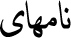 | 0646 + 0627 + 0645 + 0647 + 0627 + 06CC | NOON + ALEF + MEEM + HEH + ALEF + FARSI YEH |
 |
0646 + 0627 + 0645 + 0647 + 200C + 0627 + 06CC | NOON + ALEF + MEEM + HEH + ZWNJ + ALEF + FARSI YEH |
| Appearance | Code Points | Abbreviated Names |
| 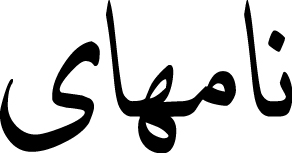 | 0646 + 0627 + 0645 + 0647 + 0627 + 06CC | NOON + ALEF + MEEM + HEH + ALEF + FARSI YEH |
| 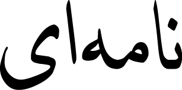 | 0646 + 0627 + 0645 + 0647 + 200C + 0627 + 06CC | NOON + ALEF + MEEM + HEH + ZWNJ + ALEF + FARSI YEH |
A2. Allow ZWNJ in the following context:
In a conjunct context. That is, a sequence of the form:- A Letter, followed by a Virama, followed by a ZWNJ
- This corresponds to the following
regular expression (in Perl-style syntax): /$L $V ZWNJ/
where:$L = [:General_Category=Letter:]
$V = [:Canonical_Combining_Class=Virama:]
Figure 3. Malayalam Example with ZWNJ
| Appearance | Code Points | Abbreviated Names |
| 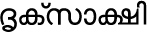 | 0D26 + 0D43 + 0D15 + 0D4D + 200C + 0D38 + 0D3E + 0D15 + 0D4D + 0D37 | DA + VOWEL SIGN VOCALIC R + KA + VIRAMA + ZWNJ + SA + VOWEL SIGN AA + KA + VIRAMA + SSA |
| 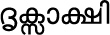 | 0D26 + 0D43 + 0D15 + 0D4D + 0D38 + 0D3E + 0D15 + 0D4D + 0D37 | DA + VOWEL SIGN VOCALIC R + KA + VIRAMA + SA + VOWEL SIGN AA + KA + VIRAMA + SSA |
| Appearance | Code Points | Abbreviated Names |
| 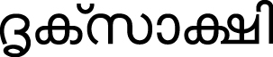 | 0D26 + 0D43 + 0D15 + 0D4D + 200C + 0D38 + 0D3E + 0D15 + 0D4D + 0D37 | DA + VOWEL SIGN VOCALIC R + KA + VIRAMA + ZWNJ + SA + VOWEL SIGN AA + KA + VIRAMA + SSA |
| 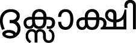 | 0D26 + 0D43 + 0D15 + 0D4D + 0D38 + 0D3E + 0D15 + 0D4D + 0D37 | DA + VOWEL SIGN VOCALIC R + KA + VIRAMA + SA + VOWEL SIGN AA + KA + VIRAMA + SSA |
B. Allow ZWJ in the following context:
In a conjunct context. That is, a sequence of the form:- A Letter, followed by a Virama, followed by a ZWJ
- This corresponds to the following
regular expression (in Perl-style syntax): /$L $V ZWJ/
where:$L= [:General_Category=Letter:]
$V = [:Canonical_Combining_Class=Virama:]
Figure 4. Sinhala Example with ZWJ
| Appearance | Code Points | Abbreviated Names |
| 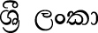 | 0DC1 + 0DCA + 200D + 0DBB + 0DD3 + 0020 + 0DBD + 0D82 + 0D9A + 0DCF | SHA + VIRAMA + ZWJ + RA + VOWEL SIGN II + SPACE + LA + ANUSVARA + KA + VOWEL SIGN AA |
| 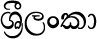 | 0DC1 + 0DCA + 200D + 0DBB + 0DD3 + 0DBD + 0D82 + 0D9A + 0DCF | SHA + VIRAMA + ZWJ + RA + VOWEL SIGN II + LA + ANUSVARA + KA + VOWEL SIGN AA |
 |
0DC1 + 0DCA + 0DBB + 0DD3 + 0020 + 0DBD + 0D82 + 0D9A + 0DCF | SHA + VIRAMA + RA + VOWEL SIGN II + SPACE + LA + ANUSVARA + KA + VOWEL SIGN AA |
| Appearance | Code Points | Abbreviated Names |
| 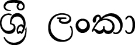 | 0DC1 + 0DCA + 200D + 0DBB + 0DD3 + 0020 + 0DBD + 0D82 + 0D9A + 0DCF | SHA + VIRAMA + ZWJ + RA + VOWEL SIGN II + SPACE + LA + ANUSVARA + KA + VOWEL SIGN AA |
| 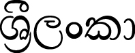 | 0DC1 + 0DCA + 200D + 0DBB + 0DD3 + 0DBD + 0D82 + 0D9A + 0DCF | SHA + VIRAMA + ZWJ + RA + VOWEL SIGN II + LA + ANUSVARA + KA + VOWEL SIGN AA |
| 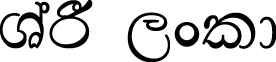 | 0DC1 + 0DCA + 0DBB + 0DD3 + 0020 + 0DBD + 0D82 + 0D9A + 0DCF | SHA + VIRAMA + RA + VOWEL SIGN II + SPACE + LA + ANUSVARA + KA + VOWEL SIGN AA |
2.4 Specific Character Adjustments
Specific identifier syntaxes can be treated as tailorings (or profiles) of the generic syntax based on character properties. For example, SQL identifiers allow an underscore as an identifier continue, but not as an identifier start; C identifiers allow an underscore as either an identifier continue or an identifier start. Specific languages may also want to exclude the characters that have a Decomposition_Type other than Canonical or None, or to exclude some subset of those, such as those with a Decomposition_Type equal to Font.
There are circumstances in which identifiers are expected to more fully encompass words or phrases used in natural languages. In these cases, a profile should consider whether the characters in Table 3 should be allowed in identifiers, and perhaps others, depending on the languages in question. In some environments even spaces are allowed in identifiers, such as in SQL: SELECT * FROM Employee Pension.
Table 3. Candidate Characters for Inclusion in Identifiers
0027 (') APOSTROPHE |
The characters marked with an asterisk in Table 3 are Join_Control characters, discussed in Section 2.3, Layout and Format Control Characters.
In UnicodeSet syntax, the characters in Table 3 are:
In identifiers that allow for unnormalized characters, the compatibility equivalents of the characters listed in Table 3 may also be appropriate. For more information on characters that may occur in words, and those that may be used in name validation, see Section 4, Word Boundaries, in [UAX29].
Some characters are not in modern customary use, and thus implementations may want to exclude them from identifiers. These include characters in historic and obsolete scripts, scripts used mostly liturgically, and regional scripts used only in very small communities or with very limited current usage. The set of characters in Table 4, Candidate Characters for Exclusion from Identifiers provides candidates of these, plus some inappropriate technical blocks.
Table 4. Candidate Characters for Exclusion from Identifiers
| Property Notation | Description |
|---|---|
[:script=Armi:] |
Imperial Aramaic |
[:script=Avst:] |
Avestan |
[:script=Brah:] |
Brahmi |
[:script=Bugi:] |
Buginese |
[:script=Buhd:] |
Buhid |
[:script=Cari:] |
Carian |
[:script=Copt:] |
Coptic |
[:script=Cprt:] |
Cypriot |
[:script=Dsrt:] |
Deseret |
[:script=Egyp:] |
Egyptian Hieroglyphs |
[:script=Glag:] |
Glagolitic |
[:script=Goth:] |
Gothic |
[:script=Hano:] |
Hanunoo |
[:script=Ital:] |
Old Italic |
[:script=Khar:] |
Kharoshthi |
[:script=Kthi:] |
Kaithi |
[:script=Linb:] |
Linear B |
[:script=Lyci:] |
Lycian |
[:script=Lydi:] |
Lydian |
[:script=Mero:] |
Meroitic Hieroglyphs |
[:script=Merc:] |
Meroitic Cursive |
[:script=Ogam:] |
Ogham |
[:script=Orkh:] |
Old Turkic |
[:script=Osma:] |
Osmanya |
[:script=Phag:] |
Phags Pa |
[:script=Phli:] |
Inscriptional Pahlavi |
[:script=Phnx:] |
Phoenician |
[:script=Prti:] |
Inscriptional Parthian |
[:script=Rjng:] |
Rejang |
[:script=Runr:] |
Runic |
[:script=Samr:] |
Samaritan |
[:script=Sarb:] |
Old South Arabian |
[:script=Shrd:] |
Sharada |
[:script=Shaw:] |
Shavian |
[:script=Sora:] |
Sora Sompeng |
[:script=Tagb:] |
Tagbanwa |
[:script=Tglg:] |
Tagalog |
[:script=Takr:] |
Takri |
[:script=Ugar:] |
Ugaritic |
[:script=Xpeo:] |
Old Persian |
[:script=Xsux:] |
Cuneiform |
[[:Extender=True:] |
U+0640 ( ـ ) ARABIC TATWEEL U+07FA ( ߺ ) NKO LAJANYALAN |
[:Default_Ignorable_Code_Point:] |
Default Ignorable Code Points See Section 2.3 Layout and Format Control Characters |
[:block=Combining_Diacritical_Marks_for_Symbols:] |
|
The scripts listed in Table 5, Recommended Scripts are generally recommended for use in identifiers. These are in widespread modern customary use, or are regional scripts in modern customary use by large communities.
| Property Notation | Description |
|---|---|
[:script=Zyyy:] |
Common |
[:script=Zinh:] |
Inherited |
[:script=Arab:] |
Arabic |
[:script=Armn:] |
Armenian |
[:script=Beng:] |
Bengali |
[:script=Bopo:] |
Bopomofo |
[:script=Cyrl:] |
Cyrillic |
[:script=Deva:] |
Devanagari |
[:script=Ethi:] |
Ethiopic |
[:script=Geor:] |
Georgian |
[:script=Grek:] |
Greek |
[:script=Gujr:] |
Gujarati |
[:script=Guru:] |
Gurmukhi |
[:script=Hani:] |
Han |
[:script=Hang:] |
Hangul |
[:script=Hebr:] |
Hebrew |
[:script=Hira:] |
Hiragana |
[:script=Knda:] |
Kannada |
[:script=Kana:] |
Katakana |
[:script=Khmr:] |
Khmer |
[:script=Laoo:] |
Lao |
[:script=Latn:] |
Latin |
[:script=Mlym:] |
Malayalam |
[:script=Mymr:] |
Myanmar |
[:script=Orya:] |
Oriya |
[:script=Sinh:] |
Sinhala |
[:script=Taml:] |
Tamil |
[:script=Telu:] |
Telugu |
[:script=Thaa:] |
Thaana |
[:script=Thai:] |
Thai |
[:script=Tibt:] |
Tibetan |
The scripts listed in Table 6, Aspirational Use Scripts are scripts would otherwise qualify as Limited Use (see Table 7, Limited Use Scripts), but have strong current efforts to increase their usage.
Table 6. Aspirational Use Scripts
| Property Notation | Description |
|---|---|
[:script=Cans:] |
Canadian_Aboriginal |
[:script=Plrd:] |
Miao |
[:script=Mong:] |
Mongolian |
[:script=Tfng:] |
Tifinagh |
[:script=Yiii:] |
Yi |
Modern scripts that are in more limited use are listed in Table 7, Limited Use Scripts. To avoid security issues, some implementations may wish to disallow the limited-use scripts in identifiers. For more information on usage, see the Unicode Locale project [CLDR].
| Property Notation | Description |
|---|---|
[:script=Bali:] |
Balinese |
[:script=Bamu:] |
Bamum |
[:script=Batk:] |
Batak |
[:script=Cakm:] |
Chakma |
[:script=Cham:] |
Cham |
[:script=Cher:] |
Cherokee |
[:script=Java:] |
Javanese |
[:script=Kali:] |
Kayah_Li |
[:script=Lana:] |
Tai Tham |
[:script=Lepc:] |
Lepcha |
[:script=Limb:] |
Limbu |
[:script=Lisu:] |
Lisu |
[:script=Mand:] |
Mandaic |
[:script=Mtei:] |
Meetei Mayek |
[:script=Nkoo:] |
Nko |
[:script=Olck:] |
Ol Chiki |
[:script=Saur:] |
Saurashtra |
[:script=Sund:] |
Sundanese |
[:script=Sylo:] |
Syloti_Nagri |
[:script=Syrc:] |
Syriac |
[:script=Tale:] |
Tai Le |
[:script=Talu:] |
New Tai Lue |
[:script=Tavt:] |
Tai Viet |
[:script=Vaii:] |
Vai |
This is the recommendation as of the current version of Unicode; as new scripts are added to future versions of Unicode, characters may be added to Tables 4, 5, 6, and 7. Characters may also be moved from one table to another as more information becomes available.
There are a few special cases:
- The Common and Inherited script values [[:script=Zyyy:][:script=Zinh:]] are used widely with other scripts, rather than being scripts per se. See also the Script_Extensions property in the Unicode Character Database [UAX44].
- The Unknown script [:script=Zzzz:] is used for Unassigned characters.
- Braille [:script=Brai:] consists only of symbols
- Katakana_Or_Hiragana [:script=Hrkt:] is empty (used historically in Unicode, but no longer.)
- With respect to the scripts Balinese, Cham, Ol Chiki, Vai, Kayah Li, and Saurashtra, there may be large communities of people speaking an associated language, but the script itself is not not in widespread use. However, there are significant revival efforts.
- Bopomofo is used primarily in education.
For programming language identifiers, normalization and case have a number of important implications. For a discussion of these issues, see Section 5, Normalization and Case.
2.5 Backward Compatibility
Unicode General_Category values are kept as stable as possible, but they can change across versions of the Unicode Standard. The bulk of the characters having a given value are determined by other properties, and the coverage expands in the future according to the assignment of those properties. In addition, the Other_ID_Start property provides a small list of characters that qualified as ID_Start characters in some previous version of Unicode solely on the basis of their General_Category properties, but that no longer qualify in the current version. These are called grandfathered characters.
The Other_ID_Start property includes characters such as the following:
U+2118 (℘) SCRIPT CAPITAL P
U+212E (℮) ESTIMATED Symbol
U+309B (゛) KATAKANA-HIRAGANA VOICED SOUND MARK
U+309C (゜) KATAKANA-HIRAGANA SEMI-VOICED SOUND MARK
Similarly, the Other_ID_Continue property adds a small list of characters that qualified as ID_Continue characters in some previous version of Unicode solely on the basis of their General_Category properties, but that no longer qualify in the current version.
The Other_ID_Continue property includes characters such as the following:
U+1369 (፩) ETHIOPIC DIGIT ONE...U+1371 (፱) ETHIOPIC DIGIT NINE
U+00B7 ( · ) MIDDLE DOT
U+0387 ( · ) GREEK ANO TELEIA
U+19DA ( ᧚ ) NEW TAI LUE THAM DIGIT ONE
The exact list of characters covered by the Other_ID_Start and Other_ID_Continue properties depends on the version of Unicode. For more information, see Unicode Standard Annex #44, “Unicode Character Database” [UAX44].
The Other_ID_Start and Other_ID_Continue properties are thus designed to ensure that the Unicode identifier specification is backward compatible. Any sequence of characters that qualified as an identifier in some version of Unicode will continue to qualify as an identifier in future versions.
If a specification tailors the Unicode recommendations for identifiers, then this technique can also be used to maintain backwards compatibility across versions.
| R1 | Default Identifiers |
| To meet this requirement, an implementation
shall use definition D1 and the properties ID_Start and ID_Continue
(or XID_Start and XID_Continue) to determine whether a string is
an identifier. Alternatively, it shall declare that it uses a profile and define that profile with a precise specification of the characters that are added to or removed from the above properties and/or provide a list of additional constraints on identifiers. |
|
| R1a | Restricted Format Characters |
| To meet this requirement, an implementation shall define a profile for R1 which allows format characters as described in Section 2.3, Layout and Format Control Characters. An implementation may further restrict the context for ZWJ or ZWNJ, such as by limiting the scripts, if a clear specification for such a further restriction is supplied. | |
| R1b | Stable Identifiers |
To meet this requirement, an implementation
shall guarantee that identifiers are stable across versions of
the Unicode Standard: that is, once a string qualifies as an
identifier, it does so in all future versions.
|
3 Alternative Identifier Syntax
The disadvantage of working with the lexical classes defined previously is the storage space needed for the detailed definitions, plus the fact that with each new version of the Unicode Standard new characters are added, which an existing parser would not be able to recognize. In other words, the recommendations based on that table are not upwardly compatible.
This problem can be addressed by turning the question around. Instead of defining the set of code points that are allowed, define a small, fixed set of code points that are reserved for syntactic use and allow everything else (including unassigned code points) as part of an identifier. All parsers written to this specification would behave the same way for all versions of the Unicode Standard, because the classification of code points is fixed forever.
The drawback of this method is that it allows “nonsense” to be part of identifiers because the concerns of lexical classification and of human intelligibility are separated. Human intelligibility can, however, be addressed by other means, such as usage guidelines that encourage a restriction to meaningful terms for identifiers. For an example of such guidelines, see the XML specification by the W3C, Version 1.0 5th Edition or later [XML].
By increasing the set of disallowed characters, a reasonably intuitive recommendation for identifiers can be achieved. This approach uses the full specification of identifier classes, as of a particular version of the Unicode Standard, and permanently disallows any characters not recommended in that version for inclusion in identifiers. All code points unassigned as of that version would be allowed in identifiers, so that any future additions to the standard would already be accounted for. This approach ensures both upwardly compatible identifier stability and a reasonable division of characters into those that do and do not make human sense as part of identifiers.
With or without such fine-tuning, such a compromise approach still incurs the expense of implementing large lists of code points. While they no longer change over time, it is a matter of choice whether the benefit of enforcing somewhat word-like identifiers justifies their cost.
Alternatively, one can use the properties described below and allow all sequences of characters to be identifiers that are neither Pattern_Syntax nor Pattern_White_Space. This has the advantage of simplicity and small tables, but allows many more “unnatural” identifiers.
| R2 | Alternative Identifiers |
To meet this requirement, an implementation
shall define identifiers to be any non-empty
string of characters that contains no character having
any of the following property values:
Alternatively, it shall declare that it uses a profile and define that profile with a precise specification of the characters that are added to or removed from the sets of code points defined by these properties. |
In its profile, a specification can define identifiers to be more in accordance with the Unicode identifier definitions at the time the profile is adopted, while still allowing for strict immutability. For example, an implementation adopting a profile after a particular version of Unicode is released (such as Unicode 5.0) could define the profile as follows:
- All characters satisfying R1 Default Identifiers according to Unicode 5.0
- Plus all code points unassigned in Unicode 5.0 that do not have the property values specified in R2 Alternative Identifiers.
This technique allows identifiers to have a more natural format—excluding symbols and punctuation already defined—yet also provides absolute code point immutability.
Specifications should also include guidelines and recommendations for those creating new identifiers. Although R2 Alternative Identifiers permits a wide range of characters, as a best practice identifiers should be in the format NFKC, without using any unassigned characters. For more information on NFKC, see Unicode Standard Annex #15, “Unicode Normalization Forms” [UAX15].
4 Pattern Syntax
There are many circumstances where software interprets patterns that are a mixture of literal characters, whitespace, and syntax characters. Examples include regular expressions, Java collation rules, Excel or ICU number formats, and many others. In the past, regular expressions and other formal languages have been forced to use clumsy combinations of ASCII characters for their syntax. As Unicode becomes ubiquitous, some of these will start to use non-ASCII characters for their syntax: first as more readable optional alternatives, then eventually as the standard syntax.
For forward and backward compatibility, it is advantageous to have a fixed set of whitespace and syntax code points for use in patterns. This follows the recommendations that the Unicode Consortium has made regarding completely stable identifiers, and the practice that is seen in XML 1.0, 5th Edition or later [XML]. (In particular, the Unicode Consortium is committed to not allocating characters suitable for identifiers in the range U+2190..U+2BFF, which is being used by XML 1.0, 5th Edition.)
With a fixed set of whitespace and syntax code points, a pattern language can then have a policy requiring all possible syntax characters (even ones currently unused) to be quoted if they are literals. Using this policy preserves the freedom to extend the syntax in the future by using those characters. Past patterns on future systems will always work; future patterns on past systems will signal an error instead of silently producing the wrong results. Consider the following scenario, for example.
In version 1.0 of program X, '≈' is a reserved syntax character; that is, it does not perform an operation, and it needs to be quoted. In this example, '\' quotes the next character; that is, it causes it to be treated as a literal instead of a syntax character. In version 2.0 of program X, '≈' is given a real meaning—for example, “uppercase the subsequent characters”.
- The pattern abc...\≈...xyz works on both versions 1.0 and 2.0, and refers to the literal character because it is quoted in both cases.
- The pattern abc...≈...xyz works on version 2.0 and uppercases the following characters. On version 1.0, the engine (rightfully) has no idea what to do with ≈. Rather than silently fail (by ignoring ≈ or turning it into a literal), it has the opportunity to signal an error.
As of [Unicode4.1], two Unicode character properties are defined to provide for stable syntax: Pattern_White_Space and Pattern_Syntax. Particular pattern languages may, of course, override these recommendations, for example, by adding or removing other characters for compatibility with ASCII usage.
For stability, the values of these properties are absolutely invariant, not changing with successive versions of Unicode. Of course, this does not limit the ability of the Unicode Standard to encode more symbol or whitespace characters, but the syntax and whitespace code points recommended for use in patterns will not change.
When generating rules or patterns, all whitespace and syntax code points that are to be literals require quoting, using whatever quoting mechanism is available. For readability, it is recommended practice to quote or escape all literal whitespace and default ignorable code points as well.
Consider the following example, where the items in angle brackets indicate literal characters:
a<SPACE>b => x<ZERO WIDTH SPACE>y + z;
Because <SPACE> is a Pattern_White_Space character, it requires quoting. Because <ZERO WIDTH SPACE> is a default ignorable character, it should also be quoted for readability. So in this example, if \uXXXX is used for a code point literal, but is resolved before quoting, and if single quotes are used for quoting, this example might be expressed as:
'a\u0020b' => 'x\u200By' + z;
| R3 | Pattern_White_Space and Pattern_Syntax Characters |
| To meet this requirement, an implementation shall
use Pattern_White_Space characters as all and only those characters
interpreted as whitespace in parsing, and shall use Pattern_Syntax
characters as all and only those characters with syntactic use.
Alternatively, it shall declare that it uses a profile and define that profile with a precise specification of the characters that are added to or removed from the sets of code points defined by these properties.
|
5 Normalization and Case
This section discusses issues that must be taken into account when considering normalization and case folding of identifiers in programming languages or scripting languages. Using normalization avoids many problems where apparently identical identifiers are not treated equivalently. Such problems can appear both during compilation and during linking—in particular across different programming languages. To avoid such problems, programming languages can normalize identifiers before storing or comparing them. Generally if the programming language has case-sensitive identifiers, then Normalization Form C is appropriate; whereas, if the programming language has case-insensitive identifiers, then Normalization Form KC is more appropriate.
Implementations that take normalization and case into account have two choices: to treat variants as equivalent, or to disallow variants.
| R4 | Equivalent Normalized Identifiers |
| To meet this requirement, an implementation shall specify the Normalization Form and shall provide a precise specification of the characters that are excluded from normalization, if any. If the Normalization Form is NFKC, the implementation shall apply the modifications in Section 5.1, NFKC Modifications, given by the properties XID_Start and XID_Continue. Except for identifiers containing excluded characters, any two identifiers that have the same Normalization Form shall be treated as equivalent by the implementation. | |
| R5 | Equivalent Case-Insensitive Identifiers |
To meet this requirement, an implementation shall specify either simple or full case folding, and adhere to the Unicode specification for that folding. Any two identifiers that have the same case-folded form shall be treated as equivalent by the implementation. |
|
| R6 | Filtered Normalized Identifiers |
| To meet this requirement, an implementation shall specify the Normalization Form and shall provide a precise specification of the characters that are excluded from normalization, if any. If the Normalization Form is NFKC, the implementation shall apply the modifications in Section 5.1, NFKC Modifications, given by the properties XID_Start and XID_Continue. Except for identifiers containing excluded characters, allowed identifiers must be in the specified Normalization Form. | |
| R7 | Filtered Case-Insensitive Identifiers |
| To meet this requirement, an implementation shall specify either simple or full case folding, and adhere to the Unicode specification for that folding. Except for identifiers containing excluded characters, allowed identifiers must be in the specified Normalization Form. |
For R6, this involves disallowing any characters in the set [:NFKC_QuickCheck=No:] (or equivalently, disallowing [:^isNFKC:]). For R7 with full case folding, this involves disallowing any characters in the set [:^isCasefolded:].
As of Unicode 5.2, an additional string transform is available for use in matching identifiers: toNFKC_Casefold. See R6 in Section 3.13, Default Case Algorithms in [Unicode]. That operation case folds and normalizes a string, and also removes default ignorable code points. It can be used to support an implementation of Equivalent Case and Compatibility-Insensitive Identifiers. There is a corresponding boolean property, Changes_When_NFKC_Casefolded, which can be used to support an implementation of Filtered Case and Compatibility-Insensitive Identifiers. The NFKC_Casefold character mapping property and the Changes_When_NFKC_Casefolded property are described in Unicode Standard Annex #44, "Unicode Character Database" [UAX44].
Note: In mathematically oriented programming languages that make distinctive use of the Mathematical Alphanumeric Symbols, such as U+1D400 MATHEMATICAL BOLD CAPITAL A, an application of NFKC must filter characters to exclude characters with the property value Decomposition_Type=Font.
5.1 NFKC Modifications
Where programming languages are using NFKC to fold differences between characters, they need the following modifications of the identifier syntax from the Unicode Standard to deal with the idiosyncrasies of a small number of characters. These modifications are reflected in the XID_Start and XID_Continue properties.
- Characters that behave like combining marks. Certain characters are not formally combining characters, although
they behave in most respects as if they were. In most cases, the mismatch
does not cause a problem, but when these characters have compatibility
decompositions, they can cause identifiers not to be closed under Normalization
Form KC. In particular, the following four characters are included in
XID_Continue and not XID_Start:
- U+0E33 THAI CHARACTER SARA AM
- U+0EB3 LAO VOWEL SIGN AM
- U+FF9E HALFWIDTH KATAKANA VOICED SOUND MARK
- U+FF9F HALFWIDTH KATAKANA SEMI-VOICED SOUND MARK
- Irregularly decomposing characters. U+037A GREEK YPOGEGRAMMENI and certain Arabic presentation forms have irregular compatibility decompositions and are excluded from both XID_Start and XID_Continue. It is recommended that all Arabic presentation forms be excluded from identifiers in any event, although only a few of them must be excluded for normalization to guarantee identifier closure.
With these amendments to the identifier syntax, all identifiers are closed under all four Normalization Forms. This means that for any string S, the implications shown in Figure 5 hold.
Figure 5. Normalization Closure
isIdentifier(S) → |
isIdentifier(toNFD(S)) |
Identifiers are also closed under case operations. For any string S (with exceptions involving a single character), the implications shown in Figure 6 hold.
Figure 6. Case Closure
isIdentifier(S) → |
isIdentifier(toLowercase(S)) |
The one exception for casing is U+0345 COMBINING GREEK YPOGEGRAMMENI. In the very unusual case that U+0345 is at the start of S, U+0345 is not in XID_Start, but its uppercase and case-folded versions are. In practice, this is not a problem because of the way normalization is used with identifiers.
The reverse implication is not true
in the case of compatibility equivalence: isIdentifier(toNFC(S)) does not imply isIdentifier(S). There are many characters for
which the reverse implication is not true, because there are many characters
counting as symbols or non-decimal numbers—and
thus outside of identifiers—whose compatibility
equivalents are letters or decimal numbers and thus in identifiers. Some
examples are shown in Table 8.
Table 8. Compatibility Equivalents to Letters or Decimal Numbers
| Code Points | GC | Samples | Names |
|---|---|---|---|
| 2070 | No | (⁰) | SUPERSCRIPT ZERO |
| 20A8 | Sc | (₨) | RUPEE SIGN |
| 2116 | So | (№) | NUMERO SIGN |
| 2120..2122 | So | (℠..™) | SERVICE MARK..TRADE MARK SIGN |
| 2460..2473 | No | (①..⑳) | CIRCLED DIGIT ONE..CIRCLED NUMBER TWENTY |
| 3300..33A6 | So | (㌀..㎦) | SQUARE APAATO..SQUARE KM CUBED |
If an implementation needs to ensure both directions for compatibility equivalence of identifiers, then the identifier definition needs to be tailored to add these characters.
For canonical equivalence the implication is
true in both directions. isIdentifier(toNFC(S)) if and only
if isIdentifier(S).
There were two exceptions before Unicode 5.1, as shown in Table 9. If an implementation needs to ensure full canonical equivalence of identifiers, then the identifier definition must be tailored so that these characters have the same value, so that either both isIdentifier(S) and isIdentifier(toNFC(S)) are true, or so that both values are false.
Table 9. Canonical Equivalence Exceptions Prior to Unicode 5.1
| isIdentifier(toNFC(S))=True | isIdentifier(S)=False | Different in |
|---|---|---|
| U+02B9 ( ʹ ) MODIFIER LETTER PRIME | U+0374 ( ʹ ) GREEK NUMERAL SIGN | XID and ID |
| U+00B7 ( · ) MIDDLE DOT | U+0387 ( · ) GREEK ANO TELEIA | XID alone |
Those programming languages with case-insensitive identifiers should use the case foldings described in Section 3.13, Default Case Algorithms, of [Unicode] to produce a case-insensitive normalized form.
When source text is parsed for identifiers, the folding of distinctions (using case mapping or NFKC) must be delayed until after parsing has located the identifiers. Thus such folding of distinctions should not be applied to string literals or to comments in program source text.
The Unicode Standard supports case folding with normalization, with the function toNFKC_Casefold(X). See definition R6 in Section 3.13, Default Case Algorithms in [Unicode] for the specification of this function and further explanation of its use.
Acknowledgments
Mark Davis is the author of the initial version and has added to and maintained the text of this annex.
Thanks to Eric Muller, Asmus Freytag, Julie Allen, Kenneth Whistler, and Martin Duerst for feedback on this annex.
References
For references for this annex, see Unicode Standard Annex #41, “Common References for Unicode Standard Annexes.”
Migration
Between Unicode Versions 5.2, 6.0 and 6.1, Table 5 was split in three. In Version 6.1, the resulting tables were renumbered for easier reference. The titles and links remain the same, for stability.
The following shows the correspondances:
| Current Tables | Unicode 6.0 | Unicode 5.2 |
|---|---|---|
| Table 5, Recommended Scripts | 5a |
5 |
| Table 6, Aspirational Use Scripts | ||
| Table 7, Limited Use Scripts | 5b |
|
| Table 8, Compatibility Equivalents to Letters or Decimal Numbers | 6 |
6 |
| Table 9, Canonical Equivalence Exceptions Prior to Unicode 5.1 | 7 |
7 |
Modifications
For details of the change history, see the online copy of this annex at http://www.unicode.org/reports/tr31/.
The following summarizes modifications from previous revisions of this annex.
Revision 14
- Added new scripts to the appropriate tables.
- Added text in 1.3 Display Format and 2.3 Layout and Format Control Characters with more guidance on differences between display and internal use of identifiers, and the use of variation selectors.
- Split Table 5a into two for easier reference. Renumbered Tables 5a1, 5a2, 5b, 6, and 7 to Tables 5, 6, 7, 8, and 9. Added a Migration section to show the relationship.
- Made it clear that the lists of grandfathered characters in section 2.5 are illustrative.
Revision 13
- Reissued for Unicode 6.0.0.
- Corrected two code points in figure 2. Corrected 2 code points in figure 3. Updated format of figures 2, 3, 4 to use small images in tables instead of large images.
- Clarified text in Section 2.3 Layout and Format Control Characters.
- Split Table 5 into two Tables,Table 5a, Recommended Scripts and Table 5b, Limited Use Scripts.
- Added Brahmi, Mandaic, and Batak to Table 4, Candidate Characters for Exclusion from Identifiers and Table 5b, Limited Use Scripts.
- Replaced discussion of case folding with normalization by paragraph pointing to toNFKC_Casefold(X).
- Moved Syriac to Limited Use; qualified Tifinagh, Yi, UCAS, Mongolian as aspirational.
- Deleted misleading sentence about stability, and added underbar to ID_Nonstart.
- Added U+19DA to list of Other_ID_Continue characters in Section 2.5, Backward Compatibility.
Revision 12 being a proposed update, only changes between revisions 13 and 11 are noted here.
Revision 11
- Reissued for Unicode 5.2.0.
- Added pointer to name validation in #29.
- Changed Qaai to Zinh.
- Tightened the first two paragraphs in section 2.3 Layout and Format Control Characters, and the subsection on Comparison. Added clarification that the rules limit but do not prevent visual confusability.
- Moved scripts between Tables 4 and 5, and marked some as limited use. Added pointer to CLDR.
- Added note that there are also cases where a joiner is used in front of a virama.
- In A1. Allow ZWNJ in the following context, changed $L and $R to $LJ and $RJ respectively to disambiguate from $L meaning Letter; fixed property name to Joining_Type, and fixed the text to correspond correctly to the regex.
- Added HTML anchors to Figures and Tables.
- Added to Candidate Characters for Inclusion in Identifiers: U+0F0B ( ་ ) TIBETAN MARK INTERSYLLABIC TSHEG and U+30FB ( ・ ) KATAKANA MIDDLE DOT.
- Added to Candidate Characters for Exclusion from Identifiers or Recommended Scripts: Default Ignorable Code Points, Tatweel (-like) characters, and scripts Old Turkic, Old South Arabian, Imperial Aramaic, Inscriptional Parthian, Inscriptional Pahlavi, Avestan, Egyptian Hieroglyphs, Samaritan, Kaithi, Lisu, Meetei Mayek, Tai Tham, Tai Viet, Javanese, Bamum.
- Updated caption style for figures and tables.
- Added table captions and centered Tables 6 and 7 in Section 5.1.
- Split the unnumbered identifier closure table in Section 5.1 into two Figures and adjusted the surrounding text for clarity.
- Removed borders around images, and redrew Figures 2, 3, 4 for clarity.
- Updated explanatory text for Figure 4.
- Minor editorial cleanup.
Revision 10 being a proposed update, only changes between revisions 11 and 9 are noted here.
Revision 9
- Updated for Unicode 5.1.0.
- Fixed Table 2 to exclude Pattern_Syntax and Pattern_White_Space explicitly.
- Added note under R2 Alternative Identifiers
- Removed surrogates, private-use, and control from R2, added notes.
- Noted restrictions on ZWJ/ZWNJ are as applied to NFC.
- Added Section 2.2 Modifier Letters and renumbered sections.
- Added Table 5, to show other scripts.
- Noted that both Tables will require updating with successive versions of Unicode, as new scripts are added.
- Broadened the discussion of Layout Controls to include other Default Ignorables in 2.3 Layout and Format Control Characters.
- Minor reformatting of tables and figures, and addition of captions to tables.
- Added descriptions of scripts in Table 4, Candidate Characters for Exclusion from Identifiers.
- Added sentence about further restrictions to R1a.
- Added line pointing to UTR36 for information about further restrictions.
- Added to discussion of canonical equivalence of identifiers.
- Added filtered identifiers and rules.
- Added format character discussion and rules.
Revision 8 being a proposed update, only changes between revisions 9 and 7 are noted here.
Revision 7
- Introduced the term profile.
- Added note on profiles of identifiers for natural language in Section 2.3 Specific Character Adjustments
- Minor editing for clarity in 2 Default Identifier Syntax
- Added note on spaces in identifiers (eg in SQL)
Revision 6 being a proposed update, only changes between revisions 7 and 5 are noted here.
Revision 5
- Removed section 4.1, because the two properties have been accepted for Unicode 4.1.
- Expanded introduction
- Adding information about stability, and tailoring for identifiers.
- Added the list of characters in Other_ID_Continue .
- Changed <identifier_continue> and <identifier_start> to just use the property names, to avoid confusion.
- Included XID_Start and XID_Continue in R1 and elsewhere.
- Added reference to UTR #36, and the phrase “or a list of additional constraints on identifiers” to R1.
- Changed “Coverage” to “General Description of Coverage,” because the UCD value are definitive.
- Added clarifications in 2.4
- Revamped 2.2 Layout and Format Control Characters
- Minor editing
Revision 3
- Made draft UAX
- Incorporated Annex 7 from UAX #15
- Added Other_ID_Continue for Unicode 4.1
- Added conformance clauses
- Changed <identifier_extend> to <identifier_continue> to better match the property name.
- Some additional edits.
Revision 2
- Modified Pattern_White_Space to remove compatibility characters
- Added example explaining use of Pattern_White_Space
Revision 1
- First version: incorporated section from Unicode 4.0 on Identifiers plus new section on patterns.
Copyright © 2000-2012 Unicode, Inc. All Rights Reserved. The Unicode Consortium makes no expressed or implied warranty of any kind, and assumes no liability for errors or omissions. No liability is assumed for incidental and consequential damages in connection with or arising out of the use of the information or programs contained or accompanying this technical report. The Unicode Terms of Use apply.
Unicode and the Unicode logo are trademarks of Unicode, Inc., and are registered in some jurisdictions.